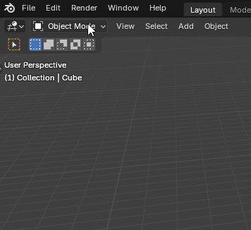
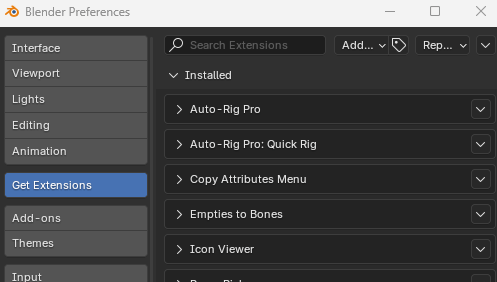
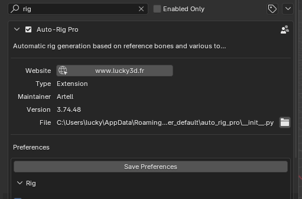
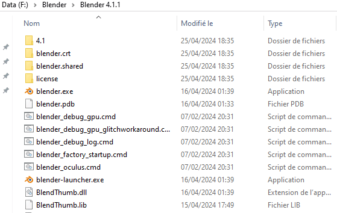
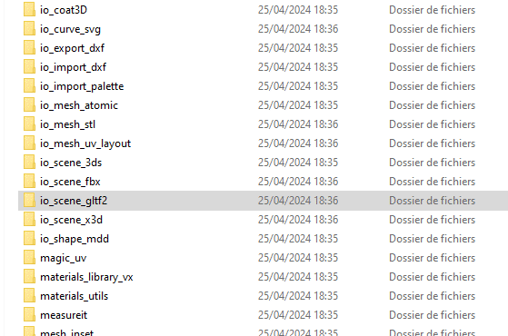

Installation
Installing the Add-Ons
Important
In Blender, click Edit > Preferences…

If an older version is already installed, make sure to uninstall the older version before installing the new one. Otherwise, the python cache won’t update, resulting in random errors.

In the Get Extensions (or Add-ons) tab, click the down arrow button at the top right corner > Install from Disk…

The select the addon zip file auto_rig_pro_x.xx.xx.zip and click Install from Disk
AI files (Smart tool)
Download the AI zip file for your distribution: AI_win.zip for Windows, AI_linux.zip for Linux…
In the Auto-Rig Pro preferences, scroll down to Install AI Files… and click it
Select the zip file and install

Proxy Picker (Optional)
The addon to select bones using the separate interface. Only necessary if you plan to use this interface.

Select proxy_picker.zip then click Install from Disk
GLTF Exporter
Important
If you run Blender 4.2 or greater, please skip this GLTF exporter installation. Do not do what’s written below. Only for older Blender versions!
If you wish to export to GLTF, the patched version of the GLTF exporter must be installed manually in order to export animated shape keys successfully. The default GLTF exporter packed with Blender will fail, it is necessary to replace it manually with this patched version, if you need to export animated shape keys.
Open the Blender add-on folder:
Blender Installation Directory/4.1/scripts/addons/

Remove the io_scene_gltf2 folder
Download io_scene_gltf2.zip
Open it. Inside, 3 versions are available: for Blender 3.6, 4.0 and 4.1 (zip files names ending with _36, _40…)
Select the correct version that matches the Blender version you currently use, and unzip the folder io_scene_gltf2 in the Blender addons folder.

Rig Tools (extra)
Only install the Rig Tools addon rig_tools_x.xx.xx.zip if you don’t install the Auto-Rig addon (e.g. after rigging your character, you can send it to the animator to ensure the IK snaps and other rig functions). Do not to install both addons, it could potentially lead to internal conflicts.